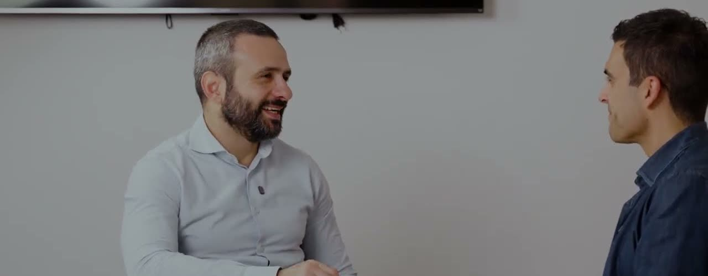

Dal problema
al lavoro che cambia.
Progetti reali, raccontati insieme ai clienti con i video delle conversazioni.
10 progetti reali
Nessun lavoro per questa combinazione. Prova un altro settore o seleziona Tutti.

AI generativa nei flussi di email del recupero crediti.
Processi amministrativi e CRM, integrati con la piattaforma di prenotazione già in uso.
Un software su misura per pratiche, scadenze e attività dello studio.

Finanza agevolata: dati, AI e un algoritmo per rendicontare le ore sui bandi.

La guida digitale con AI per caregiver e famiglie: servizi, diritti e supporto.

La piattaforma di GEO e visibilità AI: come i modelli rappresentano un brand.
Foto e video personalizzati per ogni partecipante di un evento, in meno di 12 ore.

Terapia ricreativa gratuita per bambini con patologie gravi o croniche.

Un’applicazione AI per consultare i manuali delle macchine durante l’assistenza.
Interrogare e confrontare documenti assicurativi, con il professionista al centro.
Hai un processo che merita di funzionare meglio?
Raccontaci quale attività vuoi migliorare, chi è coinvolto e quali strumenti usate. Da qui definiamo il primo passo.
Parliamoci